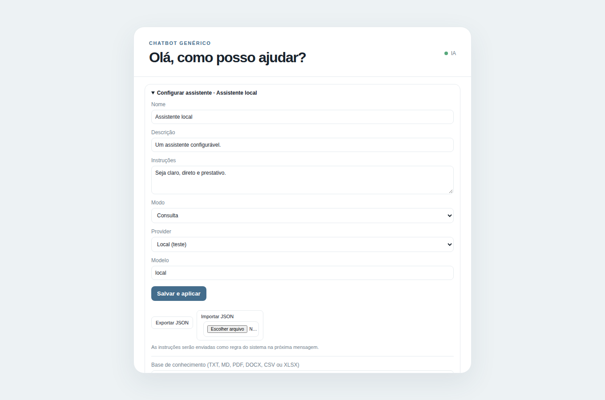

Chatbot Configurável
O Chatbot Configurável deixa escolher instruções, provedor e modo de conversa. Também busca trechos em documentos e mostra as fontes usadas na resposta. A primeira versão está concluída; a qualidade das respostas ainda precisa de avaliação sistemática.
Implementação / 02
- Aplicação
- Next.js + TypeScript
- Persistência
- SQLite para histórico e configurações
- Busca
- RAG e recuperação de trechos em documentos
- Entradas
- TXT, MD, PDF, DOCX, CSV e XLSX
- Modelos
- Provedor local de teste, OpenRouter e Gemini
- Estado
- Primeira versão concluída; avaliação sistemática pendente

Configurar sem refazer a aplicação
A interface permite definir nome e instruções do assistente, escolher o provedor e selecionar um modo de conversa: consulta, tutor ou avaliação. Assim, a mesma aplicação pode ser experimentada em tarefas diferentes.
Consultar documentos com fontes
A base de conhecimento aceita arquivos TXT, MD, PDF, DOCX, CSV e XLSX. O aplicativo procura trechos relacionados à pergunta e apresenta as fontes junto à resposta. O projeto ainda precisa de uma avaliação mais ampla para verificar quando as respostas estão de fato apoiadas nos documentos.
Histórico e portabilidade
As conversas ficam organizadas no histórico. As configurações dos assistentes podem ser exportadas e importadas em JSON, facilitando guardar versões e experimentar instruções diferentes.
Estado atual
A primeira versão funcional está concluída e pode ser configurada com provedor local de teste, OpenRouter ou Gemini. O próximo passo é avaliar a recuperação e a qualidade das respostas com documentos e perguntas variadas.
Ferramentas
- Next.js
- TypeScript
- SQLite
- RAG
- Busca em documentos
- Testes automatizados
Por dentro do projeto
